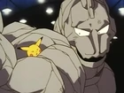

Esta es una lista de episodios de la primera temporada de Pokémon y primer parte de La Serie Pokémon: El Comienzo, que se transmitió en Japón bajo el título de Pokémon: Pocket Monsters, mientras que el nombre en occidente fue "Pokémon: ¡Atrápalos ya!" en Hispanoamérica, "Pokémon: ¡Hazte con todos!".
¡Pokémon, te elijo a ti!
Conoce a Ash, un chico de 10 años lleno de imaginación, confianza, y sueños que son casi siempre demasiado grandes para el apacible Pueblo Paleta; ¡como el deseo de convertirse en un Maestro Pokémon!
Emergencia Pokémon
La ciudad se encuentra en alerta máxima por la presencia de ladrones de Pokémon; ladrones como Jessie, James y Meowth del Team Rocket, un grupo de chicos malos que tratan de robar valiosos Pokémon.
Ash atrapa un Pokémon
El Team Rocket aparece para robar a Pikachu. Se dan cuenta de que hay algo especial acerca de este Pokémon y Ash promete defenderse.
El reto del samurái
Samurái reta a Ash a un combate. Ash obtiene ventaja cuando su Metapod se defiende contra el Pinsir del Samurái.

Combate en Ciudad Plateada
Jessie, James y Meowth cavan una trampa para nuestros héroes, pero ¡son ellos los que acaban cayéndose dentro!
Clefairy y la Piedra Lunar
¿Robará el Team Rocket la Piedra Lunar? ¿Hay otros Clefairy acechando, y llevándose Piedras Lunares? ¿Y, es cierta la leyenda de la Piedra Lunar?
Las flores acuáticas de Ciudad Celeste
Ash busca la Medalla Cascada en Ciudad Celeste, pero por alguna razón, Misty no quiere unirse a ellos. Cuando Ash y Brock aparecen, la ciudad está enerdecida por un robo que acaba de ocurrir, ¡y en un principio son acusados del delito!
El camino hacia la Liga Pokémon
De camino a Ciudad Carmín, Ash se encuentra con A.J., un Líder de Gimnasio en un Gimnasio no autorizado que cuenta con 98 victorias y cero derrotas. Luchan, y a Ash le resulta sorprendente que el Sandshrew de tipo Tierra de A.J. pueda ganar fácilmente
La escuela de los golpes duros
Mientras buscan leña en el bosque nebuloso, Ash y Pikachu descubren a un grupo de niños de la escuela primaria acosando a un compañero de clase llamado Joe.
Bulbasur y la aldea oculta
Ash y Misty, en medio de una discusión, descubren un Oddish. Mientras el Starmie de Misty debilita al Oddish, aparece un Bulbasaur y lucha contra Starmie, entre tanto el Oddish sale corriendo hacia el bosque.